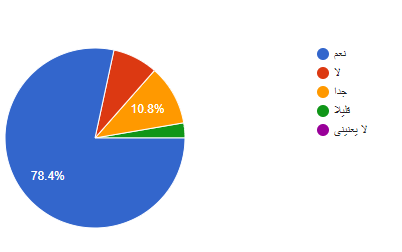

استبيان عن التنمية المستدامة
sustainable development
تم عمل استبيان على عينة عشوائية من المواطنين وذلك لدراسة المشروع بشكل افضل برجاء الضغط على اللينك التالى للاجابة على الاستبيان ومساعدتنا للوصول الى نتائج افضل https://forms.gle/LGiVYjuVG2A2tzUb7
جاءت نتائج الدراسة كالتالي
السؤال الأول:هل تعرف / ى اهداف التنمية المستدامة ال17
السؤال الثاني:هل انت مهتم /ة بالحفاظ علي البيئه
السؤال الثالث:هل انت مهتم /ة بفصل القمامة من المنبع
السؤال الرابع:هل انت مهتم /ة بالحصول على عائد من قمامتك
السؤال الخامس:هل انت مستعد/ة لفصل القمامة من المنبع مقابل عائد

السؤال السادس:هل انت مستعد/ة لاستخدام تطبيق على الهاتف للحصول على عائد مقابل لفصل القمامة من المنبع
السؤال السابع:هل انت مستعد/ة لجمع نقاط وكوبونات من تطبيق على الهاتف للحصول على عائد مقابل لفصل القمامة من المنبع
السؤال الثامن:هل انت مستعد/ة لنشر الفكره اذا اعجبتك (استخدام تطبيق على الهاتف للحصول على عائد مقابل لفصل القمامة من المنبع)
من خلال نتائج الدراسة يتضح ان الغالبية العظمي من المشاركين في الأستبيان مهتمين بالحفاظ علي البيئة واستخدام المشروع